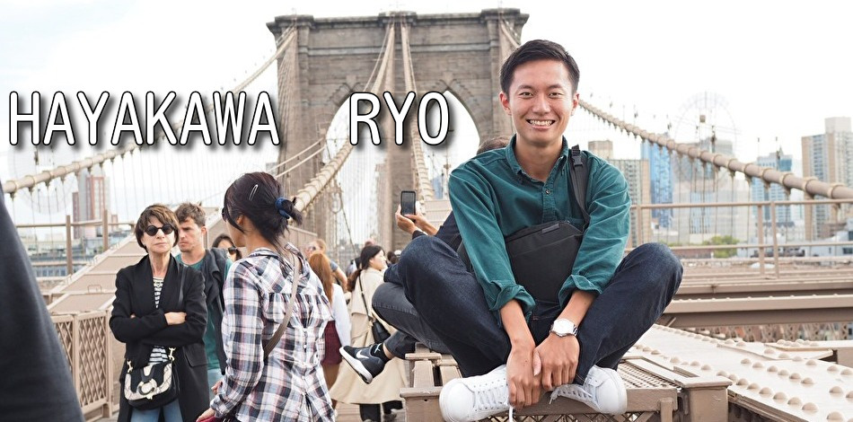
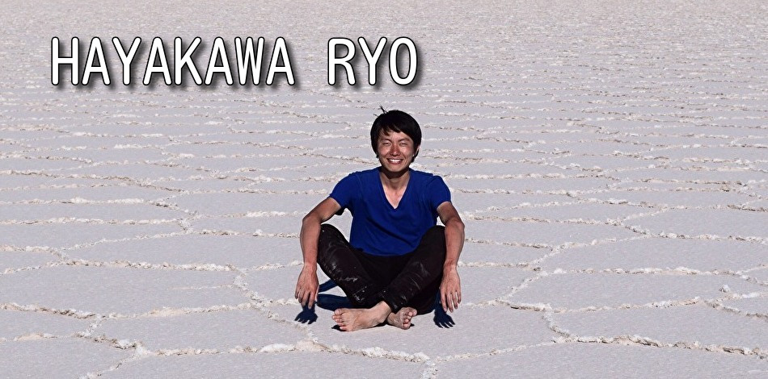

- 
-

- 
-

-
- 1994.03.08
- 早川家の次男として小牧市民病院で生まれる
- 1994.xx.xx
- 菌だらけの鳥の糞をなめて救急車で緊急搬送をされる
- 2000.xx.xx
- 色々あってマンホールの蓋が落ちてきて左腕を複雑骨折する
- 2001.xx.xx
- 兄に二段ベッドから落とされて鎖骨を骨折する
CARRER
岐阜聖徳学園 教育学部 英語専修卒業
大学では小学校、中学校、高校の教員免許を取得しました。部活動ではバスケットボール部に所属 をしてスタメンとしてバスケ部の岐阜リーグ優勝に貢献をしました。学校という小さなコミュニティーではなく 社会に出て活躍したいと思い企業に就職しました。
アメリカのボストンへ９ヶ月間の留学
周りが教育実習をする中アメリカ留学を決めて現地の語学学校に９ヶ月間通いました。現地ではバスケットボール を通じて現地の友達を作りその環境を楽しみました。その成果として帰国後TOEICの最高スコアは920点になりました。
旅行会社H,I,Sに就職をする
前の会社では３年間勤めました。２年目の時には当時在籍指定た営業所で月間の個人売上の営業所記録を更新しました。 その結果３年目には中部圏で最大規模の営業所へ配属になりました。新しい環境に素早く順応をして結果を出すことに自信があります。 当時の環境で満足せず、新しい環境でさらにチャレンジをしたいと思い、エンジニアになることを志しました。